Tutorías académicas
Cerrar sesión
¡Bienvenido(a) Froylan!
Registrar lista de asistencia
Mis listas de asistencia
Registrar reporte de tutoría
Mis reportes de tutoría
Reportes de tutoría
Mis tutorados
Estudiantes
Académicos
 Experiencias Educativas
Registrar horario de tutoría
 Registrar fechas de tutoría
Modificar fechas de tutoría